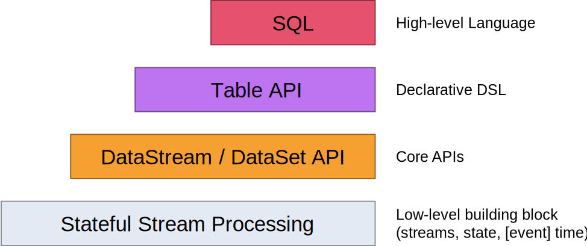
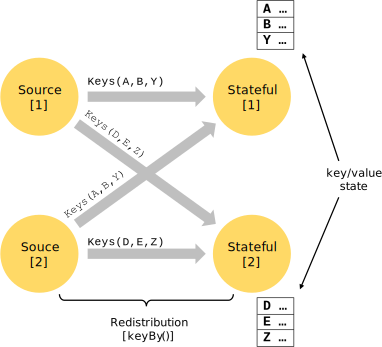

v1.2
v1.2
数据流编程模型
抽象级别
Flink提供了不同的抽象级别以开发流式或批处理应用。

-
最底层级的抽象仅仅提供了有状态流。它将通过过程函数（Process Function）嵌入到DataStream API中。它允许用户可以自由地处理来自一个或多个流数据的事件，并使用一致、容错的状态。除此之外，用户可以注册事件时间和处理事件回调，从而使程序可以实现复杂的计算。
-
实际上，大多数应用并不需要上述的低层级抽象，而是针对 核心API（Core APIs） 进行编程，比如DataStream API（有界或无界流数据）以及DataSet API（有界数据集）。这些流畅的API为数据处理提供了通用的构建模块，比如由用户定义的多种形式的转换（transformations），连接（joins），聚合（aggregations），窗口操作（windows），状态（state）等等。这些API处理的数据类型以类（classes）的形式由各自的编程语言所表示。
低层级的 过程函数 与 DataStream API 相集成，使其可以对某些特定的操作进行低层级的抽象。DataSet API 为有界数据集提供了额外的原语，例如循环与迭代。
- Table API 是以 表 为中心的声明式DSL，其中表可能会动态变化（在表达流数据时）。Table API遵循（扩展的）关系模型：表具有附加的模式（类似于关系数据库中的表），同时API提供可比较的操作，例如select、project、join、group-by、aggregate等。Table API程序声明式地定义了 什么逻辑操作应该执行 而不是准确地确定 这些操作代码的看上去如何 。 尽管Table API可以通过多种类型的用户定义的函数进行扩展，其仍不如 核心API 更具表达能力，但是使用起来却更加简洁（代码量更少）。除此之外，Table API程序还可以在执行之前通过应用优化规则的优化器。
你可以在表与 DataStream/DataSet 之间无缝切换，以允许程序将 Table API 与 DataStream 以及 DataSet 混合使用。
- Flink提供的最高层级的抽象是 SQL 。这一层抽象在语法与表达能力上与 Table API 类似，但是是以SQL查询表达式的形式表现程序。SQL抽象与Table API交互密切，同时SQL查询可以直接在Table API定义的表上执行。
程序与数据流
Flink程序的基础构建模块是 流（streams） 与 转换（transformations）。（需要注意的是，Flink的DataSet API所使用的DataSets其内部也是流——更多内容将在之后讨论。）概念上来讲，流 是（可能永无止境的）数据记录流，而 转换 是一种操作，它取一个或多个流作为输入，并生产出一个或多个输出流作为结果。
执行时，Flink程序映射到 流数据流（streaming dataflows） ，由 流 以及转换 算符 构成。每一个数据流起始于一个或多个 source，并终止于一个或多个 sink。数据流类似于任意的 有向无环图 （DAG） 。虽然通过 迭代 构造允许特定形式的环，但是大多数情况下，简单起见，我们都不考虑这一点。

通常，程序中的转换与数据流中的操作之间是一对一的关系。有时，然而，一个转换可能由多个转换操作构成。
并行数据流
Flink程序本质上是并行分布的。在执行过程中，一个 流 包含一个或多个 流分区 ，而每一个 算符 包含一个或多个 算符子任务 。操作子任务间彼此独立，以不同的线程执行，甚至有可能运行在不同的机器或容器上。
算符子任务的数量即这一特定算符的 并行度 。一个流的并行度即其生产算符的并行度。相同程序中的不同的算符可能有不同级别的并行度。

流在两个算符之间传输数据，可以通过 一对一 （或称 forwarding ）模式，或者通过 redistributing 模式：
-
一对一 流（例如上图中 Source 与 map() 算符之间）保持了元素的分区与排序。那意味着 map() 算符的子任务[1]将以与 Source 的子任务[1]生成顺序相同的顺序查看到相同的元素。
-
Redistributing 流（如上图中 map() 与 keyBy/window 之间，以及 keyBy/window 与 Sink 之间）则改变了流的分区。每一个 算符子任务 根据所选择的转换，向不同的目标子任务发送数据。比如 keyBy() （根据key的哈希值重新分区）， broadcast() ，或者 rebalance() （随机重分区）。在一次 redistributing 交换中，元素间的排序只保留在每对发送与接受子任务中（比如， map() 的子任务[1]与 keyBy/window 的子任务[2]）。因此在这个例子中，每个键的顺序被保留下来，但是并行确实引入了对于不同键的聚合结果到达sink的顺序的不确定性。
窗口
聚合事件（比如计数、求和）在流上的工作方式与批处理不同。比如，对流中的所有元素进行计数是不可能的，因为通常流是无限的（无界的）。相反，流上的聚合需要由 窗口 来划定范围，比如 “计算过去的5分钟” ，或者 “最后100个元素的和” 。
窗口可以是 事件驱动的 （比如：每30秒）或者 数据驱动的 （比如：每100个元素）。窗口通常被区分为不同的类型，比如 滚动窗口 （没有重叠）， 滑动窗口 （有重叠），以及 会话窗口 （由不活动的间隙所打断）

更多窗口的案例可以查看这个博客。
时间
当提到流程序（例如定义窗口）中的时间时，你可以参考不同的时间概念：
-
事件时间 是事件创建的时间。它通常由事件中的时间戳描述，例如附接在生产传感器，或者生产服务。Flink通过时间戳分配器访问事件时间戳。
-
摄入时间 是事件进入Flink数据流源算符的时间。
-
处理事件 是每一个执行时间操作的算符的本地时间。

更多关于如何处理时间的细节可以查看事件时间文档.
有状态操作
尽管数据流中的很多操作一次只查看一个独立的事件（比如事件解析器），有些操作却会记录多个事件间的信息（比如窗口算符）。 这些操作被称为 有状态的 。
有状态操作的状态保存在一个可被视作嵌入式键/值存储的部分中。状态与由有状态算符读取的流一起被严格地分区与分布。因此，只能访问一个 keyBy() 函数之后的 keyed streams 的键/值状态，并且仅限于与当前事件键相关联的值。对齐流和状态的键确保了所有状态更新都是本地操作，以在没有事务开销的情况下确保一致性。这种对齐还使得Flink可以透明地重新分配状态与调整流的分区。

容错检查点
Flink使用 流重放 与 检查点 的结合实现了容错。检查点与每一个输入流及其相关的每一个算符的状态的特定点相关联。一个流数据流可以可以从一个检查点恢复出来，其中通过恢复算符状态并从检查点重放事件以保持一致性 （一次处理语义）
检查点间隔是以恢复时间（需要重放的事件数量）来消除执行过程中容错的开销的一种手段。
更多关于检查点与容错的细节可以查看容错文档。
流上的批处理
Flink将批处理程序作为流处理程序的特殊情况来执行，只是流是有界的（有限个元素）。 DataSet 内部被视为数据流。上述适用于流处理程序的概念同样适用于批处理程序，除了一些例外：
-
DataSet API中的程序不使用检查点。而通过完全地重放流来恢复。因为输入是有界的，因此这是可行的。这种方法使得恢复的成本增加，但是由于避免了检查点，因而使得正常处理的开销更小。
-
DataSet API中的有状态操作使用简化的im-memory/out-of-core数据结构，而不是键/值索引。
-
DataSet API引入了特殊的同步（基于superstep的）迭代，而这种迭代仅仅能在有界流上执行。细节可以查看迭代文档。
下一步
继续阅读Flink的分布式运行时的基本概念。